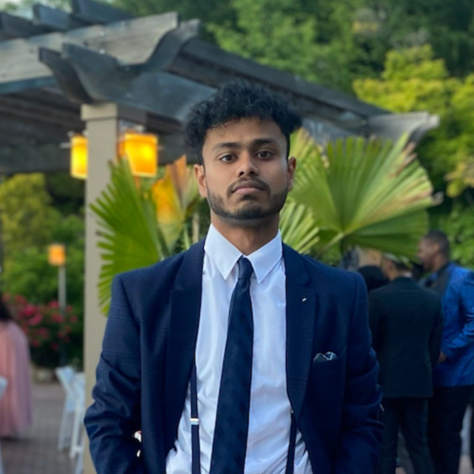
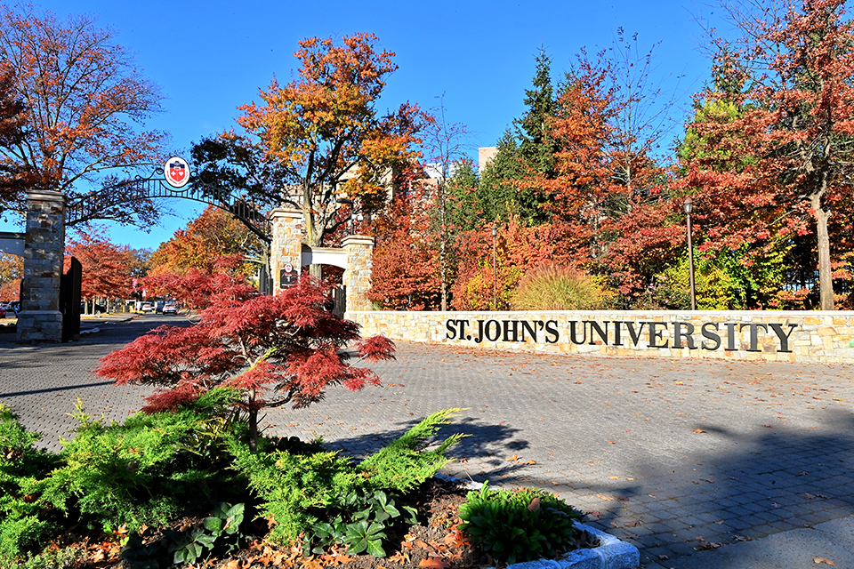
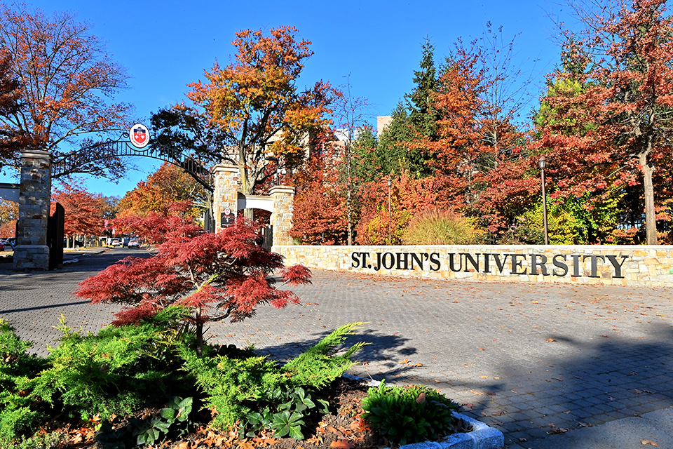

Raiyan Bhuiyan
Major: Information Technology | Minor: Business Administration
 Education
 

I am currently in my senior year at St. John's University pursuing a bachelor's degree in Information Technology with a minor in Business Administration. I plan to continue into an MBA program. Before attending St. John's University, I studied at Thomas A. Edison Career & Technical Education High School in Queens, NY, where I specialized in Information Technology and Cisco Networking for three years. I graduated with more than four technical certifications and completed an internship with Cisco, as well as a part-time position with the NYC Department of Education for IT-related operations. Additionally, I attended the FEP U. Porto Economics and Management program.
| Institution | Degree |
|---|---|
| Thomas A. Edison Career & Technical Education | HS Diploma |
| FEP U. Porto | Economics and Management |
Work Experience
Parents Resource/Project Coordinator
Queens Community House (2024 - Present)
- Established family support initiatives, including an online Parent Resource Database, multilingual helpline, and webinars.
- Utilized CEC funding for data-driven projects, leading data collection, testing solutions, and collaborating with organizations to support low-income and non-English-speaking communities.
Founder
Melior - Melworld (2024 - Present)
- Launched an immersive platform for high school students to gain career exposure through virtual industry tasks.
- Aided talent scouting for industries and universities.
- Led a global team to develop and pitch a product at the European Innovation Academy in three weeks, presenting to Fortune 500 investors with a 5-year market valuation.
Programming Intern
Clinton Foundation (2023)
- Collaborated with the CGI Program Team on research initiatives, data collection, global expansion, and event development.
- Supported event operations, contributing to the success of CGI’s September meeting and fostering key connections.
Project Manager
Emerson Collective x NYC DOE (2022 - 2023)
- Led a cross-functional team for NYC Schools, collaborating with city hall and the Chancellor, earning national PBL recognition.
- Managed a $200K+ budget over eight months, overseeing contracts, vendor relations, and partnerships with Fortune 500 companies.
- Developed strategic insights for programs and curricula, leading workshops and design thinking training across NYC’s Department of Education.
Technology Technician
NYC DOE (2022 - 2023)
- Managed 1,000+ devices, including laptops, iPads, printers, and Promethean boards.
- Oversaw servers, switches, school websites, and enterprise systems like Adobe, Cisco Meraki, Google Suite, and Office 360, supporting 1,000+ students and 60+ staff members.
Intern, Cisco Dream Team
NYC Global Citizen Festival (2022 & 2023)
- Installed and managed networks and WiFi for VIP and 60,000 attendees.
- Oversaw cable management, access point installation, and WiFi security setup across Central Park.
Skills
| Skill | Proficiency |
|---|---|
| HTML | High |
| CSS | High |
| Java | Medium |
| Python | Medium |
General Interests
I enjoy outdoor activities, trying new experiences, exploring different foods, listening to music, playing sports, traveling, and meeting new people. I love running and playing football. I also have a passion for problem-solving and finding innovative solutions. Additionally, I enjoy movies, TV shows, books, and more.

| Interests |
|---|
| Basketball |
| Football |
| Innovation |
| Running |
| Design & Research |
| Exploring |
| Legos |
| Driving |
| Music |
Favorites
Movie:
TV Show:
My Projects in This Course
This section serves as an index of all milestones completed in the course. This list will be updated as I progress.
Websites
- YouTube - YouTube is one of my favorite websites and hardly needs an explanation. In today's world, where traditional media has been replaced by digital platforms, YouTube serves as an endless source of knowledge and entertainment. From cooking tutorials to learning how to code in HTML, YouTube offers content on almost any subject imaginable.
- LinkedIn - LinkedIn is another platform that requires little introduction. It is a professional networking site that connects people worldwide, allowing users to search for jobs, work on projects, gain industry knowledge, and build meaningful professional connections. I love LinkedIn because it serves as the Facebook of our professional lives, helping us network, learn, and grow in our careers.